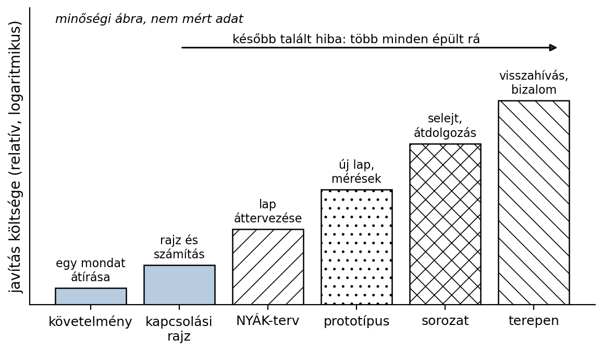
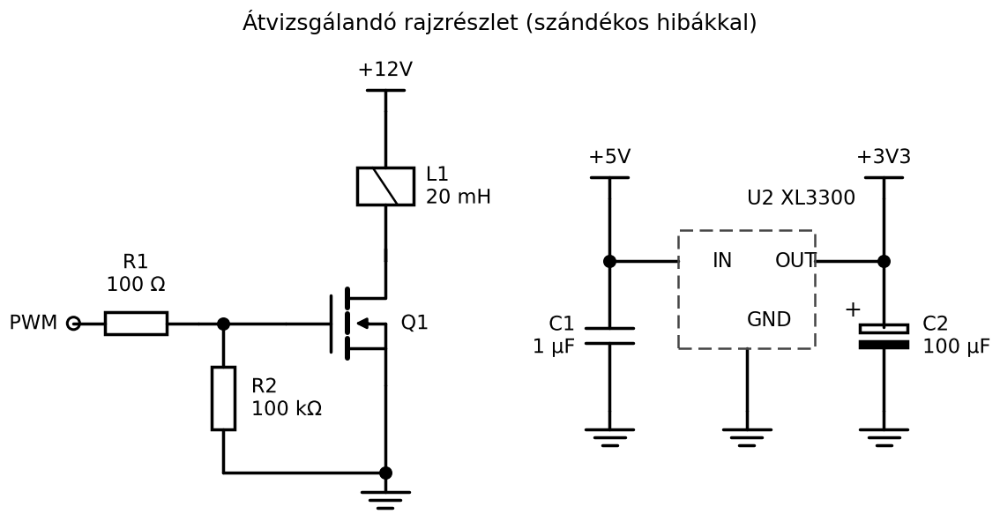

A követelmények, a rajz, a kényszerlista és a szimuláció kész. Mielőtt a terv a NYÁK-tervezőhöz kerülne, módszeresen átnézzük, és összeállítjuk, mit kap kézhez. Ennek az alfejezetnek a végére:
Építünk a Tanulási útvonalak és belépő teszt, a Mikrovezérlő GPIO illesztése terhelésekhez, Az adatlap olvasása, a Derating, tűrésanalízis és megbízhatóság, a Hőtervezés és vezetőmelegedés, a Szigetelési távolság és kúszóút, a Megfelelőség: CE, irányelvek, RoHS és a termékbiztonság logikája és a VII. rész EMC-, földelési, szűrési, védelmi és integritási alfejezetei (Az EMC alapjai: forrás, csatolás, vevő–Tápintegritás és hidegítés), valamint a Szimuláció és ellenőrzés eredményeire.
Két alfejezet két jó döntése: a +3V3 sín hidegítéséhez a Tápintegritás és hidegítés 100 µF-os polimer kondenzátort választott, mert az tartja a célimpedanciát; Az adatlap olvasása pedig kigyűjtötte a 3,3 V-os LDO (a fiktív XL3300) adatait – köztük azt, hogy a kimenetén legfeljebb 47 µF tényleges kapacitás lehet. Mindkét döntés helyes a saját szempontjából, együtt viszont az adatlapi tartományon kívül eső, esetleg begerjedő szabályzót adnak. Az ilyen ellentmondást senki sem látja, aki egyszerre csak egy részletet néz. Ehhez kell az átvizsgálás.
A tervezési átvizsgálás olyan, mint a pilóta indulás előtti ellenőrzőlistája: nem a tudás hiányát pótolja, hanem azt, hogy fáradtan, megszokásból se maradjon ki semmi. A hasonlat ott sántít, hogy a lista csak az ismert hibafajtákat fogja meg; ami új, azt a második, friss szem és a kérdezés találja meg.

Az ábra arányai szemléltetőek, nem mért adatok; az irány viszont következik a folyamatból: minden későbbi fázis ráépít a korábbira, ezért egy kapcsolási rajzi hiba javítása a prototípus után már a lapot, a beszerzést és a méréseket is érinti.
Definíció. A tervezési átvizsgálás (design review) a terv szervezett, írásos ellenőrzése a következő fázis előtt, előre ismert szempontok szerint, a szerzőtől lehetőleg független résztvevővel.
Menete: (1) a szerző a csomagot előre elküldi; (2) az átvizsgálók a listával és a követelményekkel átnézik; (3) a megbeszélés a megállapításokat rögzíti, a megoldást nem ott találják ki; (4) minden megállapítás felelőst, döntést és lezárást kap; (5) javítás után az érintett számításokat újra lefuttatják. Egyedül dolgozva is érdemes: egy nap szünet után, a listával, a követelmények felől visszafelé haladva.
A könyv listája (elkit.review, 57 tétel) kilenc
fejezetből áll; minden tételhez súlyosság, ellenőrzési fázis és a
hivatkozott alfejezet tartozik.
| Fejezet | Tipikus kérdés |
|---|---|
| táp | védelem, sorrend, mérleg, tekercstelítés, LDO hő, hidegítés |
| be-/kimenetek | jelszintek, lebegő bemenet, reset-állapot, induktív befogás, ESD |
| alkatrészek | abszolút határ, derating, hő, tényleges kapacitás |
| analóg | hibaköltségvetés, stabilitás, antialiasing, referencia |
| digitális | órajel, lezárás, felhúzók, programozás |
| EMC | források és utak, csillagpont, forró hurkok, szűrés |
| biztonság | szigetelési határ, energiaforrások, megfelelőség |
| tesztelhetőség | tesztpontok, leválasztható blokkok, bekapcsolási protokoll |
| dokumentáció | jelölők, BOM, kényszerlista, jegyzőkönyvek, nyitott kérdések |
Definíció. A megállapítás súlyossága:
Egy megállapítás állapota nyitott, javítva vagy elfogadva. Az elfogadás indoklást kíván (miért nem kell javítani), és a döntési naplóba kerül; egy kell követelmény sérülését nem lehet elfogadni a követelmény módosítása nélkül. Az átadás feltétele: nincs nyitott kritikus vagy fontos tétel, és minden dokumentum megvan.
Kötelező attribútumok: referenciajelölő, érték, tűrés, tok, gyártói cikkszám, névleges és legrosszabb üzemi feszültség, áram vagy teljesítmény, kondenzátornál dielektrikum, második forrás, életciklus (aktív, NRND, elavult), RoHS-nyilatkozat, DNP-jelölés. Ezekből a derating gépileg ellenőrizhető (Derating, tűrésanalízis és megbízhatóság); az elhasználódó elemeket (elektrolit, relé, optocsatoló) külön, élettartamra is meg kell nézni.
| Fázis | Példa a listából |
|---|---|
| rajz (50 tétel) | védelem, szintek, derating, kényszerlista |
| layout (3 tétel) | lábkiosztás és rajzolat egyezése, forró hurkok, légköz és kúszóút |
| prototípus (4 tétel) | hullámosság és terhelésugrás mérése, EMC-előmérés, első bekapcsolás, hőkamera |
A fázis nem azt jelenti, hogy a kérdés addig ráér. A layout-tételekhez a rajzfázisban kell a bemenő adatot átadni (a kényszert, a szigetelési követelményt, a tokot), a prototípus-tételekhez pedig a rajzra kell a mérés feltételeit tenni: tesztpontot, leválasztó 0 Ω-os átkötést, kihagyott szűrőhelyet. A rajzon ellenőrizhetetlen kérdés így sem vész el: a nyitott kérdések listájára kerül, felelőssel.
A gépi ellenőrzés (a rajzprogram elektromos szabályellenőrzése, a BOM-derating, a kényszerlista teljessége) gyors és fáradhatatlan, de csak azt látja, amit adatként megkapott: ha a legrosszabb üzemi feszültséget valaki 5 V-nak írta 16 V helyett, a gép boldogan elfogadja. Az embernek a feltevéseket kell vizsgálnia: honnan jön a szám, melyik sarokra vonatkozik, és mi történik hibaállapotban (zárlat, fordított bekötés, kihúzott csatlakozó, reset). Jó kérdés minden megállapítás előtt: „mi lenne, ha ez az érték a másik szélén lenne?”
A prototípus első bekapcsolása is tervezett (Labortáp, áramkorlát és függvénygenerátor): labortápról, 12 V-on, 100 mA-es áramkorláttal, külső fogyasztó és terhelés nélkül; a várt áram 38,2 mA (tipikus), legfeljebb 61,9 mA. Az EMC-előmérés (a végleges vizsgálat előtti tájékozódó mérés) és a hőkamerás ellenőrzés ezután következik; a könyv ezeket csak kitekintésként említi.
Definíció. Az átadási csomag azoknak a dokumentumoknak a verziózott összessége, amelyekből a NYÁK-tervező szóbeli magyarázat nélkül dolgozhat, és amelyekkel a döntések visszakereshetők.
| Dokumentum | Tartalma | Honnan |
|---|---|---|
| kapcsolási rajz | lapok, jelölők, hálózatnevek, megjegyzések | Kapcsolási rajz konvenciói és a NYÁK-tervezőnek átadott kényszerek |
| BOM | a fenti attribútumokkal | Tokozások: furatszerelt és SMD, Az adatlap olvasása |
| kényszerlista | hálózatosztályonként | Kapcsolási rajz konvenciói és a NYÁK-tervezőnek átadott kényszerek |
| számítási jegyzőkönyv | SZM-sorok, feltevésekkel | Követelményektől a blokkdiagramig |
| szimulációs jegyzőkönyv | SIM-sorok, modellkorlátokkal | Szimuláció és ellenőrzés |
| nyitott kérdések | mit, ki, meddig, blokkoló-e | ez az alfejezet |
Mellé tartozik a követelménylista, a blokkdiagram, a döntési napló és az első bekapcsolás terve. A nyitott kérdés (például: mekkora a láb szivárgása 60 °C-on?) nem hiba, ha van felelőse és határideje; a blokkoló kérdés viszont megakasztja az átadást.
Továbbvitt eredmény. Az átvizsgálás súlyosság szerint rögzített, lezárt megállapításokat ad; átadható az a terv, amelyben nincs nyitott kritikus vagy fontos tétel, megvan a hat dokumentum (rajz, BOM, kényszerlista, számítási és szimulációs jegyzőkönyv, nyitott kérdések), és nincs blokkoló kérdés. Ezt az ellenőrzőlistát és csomagot használja az 1. záróprojekt: védett tápegység 12 V-ról 5 V-ra és 3,3 V-ra, a 2. záróprojekt: érzékelő-illesztő és mérőlánc, a 3. záróprojekt: MOSFET-es meghajtó induktív terheléshez és a Vegyes vizsgafeladatsor.

(Az LDO mellett a +3V3 sínen még a mikrovezérlő 4×100 nF-ja, egy 1 µF, és a ferrit mögött a +3V3A sziget 1 µF + 10 µF kondenzátora van.)
1. megállapítás (IO-05). Az L1-en nincs szabadonfutó dióda. Lekapcsoláskor a tárolt energia a 16 V-os, hideg sarok 1,62 A-ével mJ, ami több, mint az MN1 20 mJ-os lavinaenergiája (mintaadat, Biztonságos működési tartomány, lavina és induktív terhelés). Kritikus.
2. megállapítás (IO-02). A reset alatti belső felhúzóval (min. 25 kΩ) V, a küszöb fölött: a szolenoid bekapcsol. Kritikus; javítás: 4,7 kΩ.
3. megállapítás (ALK-01). Az LDO a kimenetén µF névleges (kb. 110 µF tényleges) kapacitást lát, az adatlapi tartomány felső határa 47 µF. Kritikus. Javítás: 33 µF-os polimer (ESR kb. 40 mΩ): µF névleges, és a Tápintegritás és hidegítés célimpedancia-számítása szerint . Ez a D-06 döntés.
4. megállapítás (TESZT-01). A LOAD hálózaton nincs tesztpont (és a rajzrészleten a drain neve sincs kiírva). Fontos.
A darabjegyzék három sora kézzel (a minta-BOM, MLCC-határ 60 %, ellenállás 50 %): a bemeneti elektrolit 25 V-os, a tesztimpulzus 30 V – a névleges érték fölött, kritikus, amíg nem igazoljuk, hogy a TVS alacsonyabban fogja; az 5 V-os kimeneti 22 µF/6,3 V terhelése % (fontos); a 2 kΩ-os LED-előtét 0603-ban % teljesítményterhelés (fontos, 1206-ra cserélendő).
5. A korábbiakból: a K-09 árammérési követelmény sérül (5,6 % > 5 %, Követelményektől a blokkdiagramig) – fontos, és a rajz módosítása nélkül nem zárható le: a döntést a 2. záróprojekt hozza meg: a 2. záróprojekt: érzékelő-illesztő és mérőlánc külön, 3,0 V-os referenciával 3,9 %-ra viszi a hibát, és ezzel lezárja.
Rangsor: három kritikus (1–3), két fontos (4–5). Átadás tehát a javítások után sem lehetséges, amíg az 5. nyitott.
A rajzon ellenőrizendő tételek a listából szűrhetők:
from elkit import review
rajz = review.checklist(phases=["rajz"])
krit = review.checklist(phases=["rajz"], severities=["kritikus"])
print(len(rajz), "tétel a rajzon, ebből", len(krit), "kritikus")
print(review.format_checklist([i for i in krit if i.id in ("IO-02", "IO-05", "ALK-01")]))50 tétel a rajzon, ebből 13 kritikus
== be-/kimenetek ==
[ ] IO-02 Minden MOSFET-gate és vezérlőbemenet meghatározott szintű reset alatt is?
(kritikus, rajz; el045, el055)
[ ] IO-05 Minden induktív terhelésnek van-e szabadonfutó vagy fogó útja? (kritikus, rajz;
el048, el084)
== alkatrészek ==
[ ] ALK-01 Egyetlen alkatrész sem éri el az abszolút határértékét semmilyen üzemállapotban?
(kritikus, rajz; el065)A mintaként mellékelt, szándékosan hibás darabjegyzék
(data/review_bom_minta.csv) vizsgálata:
bom = review.load_bom()
talalat = review.check_bom(bom)
print(review.count_by_severity(talalat))
print(review.format_findings([f for f in talalat if f.severity == "kritikus"
or f.ref in ("C2", "R1", "U2")])){'kritikus': 1, 'fontos': 11, 'ajánlott': 7}
kritikus C1 tranziens 30 V > névleges 25 V (igazold a fogófeszültséggel, vagy válassz
nagyobbat)
fontos C2 feszültség: 5/6.3 V = 79%, az irányelv szerint legfeljebb 60%
fontos R1 teljesítmény: 0.098/0.1 W = 98%, az irányelv szerint legfeljebb 50%
fontos U2 hőmérséklet 105 °C, a tartalék 20 °C < 25 °C
ajánlott C2 X5R 79% DC-feszültségen: ellenőrizd a tényleges kapacitást az adatlapgörbén
ajánlott U2 RoHS-nyilatkozat nincs rögzítve
összesen: 1 kritikus, 3 fontos, 2 ajánlottA javításokat a sorokon végezzük el, majd újra ellenőrzünk. Az elavuló (NRND) mikrovezérlő helyett egy aktív, 105 °C-os változat kerül a listára, így a hőmérsékleti tartalék is megfelel. A C1 30 V-os tranziensénél nem alkatrészcsere kell, hanem igazolás: a TVS az impulzust 21,8 V-ra fogja (Tápbemeneti védelmek: biztosíték, polaritás, túlfeszültség, áramlökés), ezért a legrosszabb tranziens ennyi.
from dataclasses import replace
fix = {"C1": dict(u_transient=21.8, note="TVS-fogás igazolva (el057)"),
"C2": dict(u_rating=10.0), "C4": dict(dielectric="X7R", mpn="MINTA-C104"),
"J1": dict(mpn="MINTA-J1", package="2p"), "L1": dict(i_rating=3.0),
"R1": dict(package="1206", p_rating=0.25), "R3": dict(package="0603"),
"U1": dict(lifecycle="aktív", mpn="MINTA-MCU2", t_max=105.0), # 105 °C-os változat
"U2": dict(package="WSON-6", t_est=85.0, rohs=True, lifecycle="aktív")}
javitott = [replace(it, **fix.get(it.ref, {})) for it in bom]
maradt = review.check_bom(javitott)
print(review.count_by_severity(maradt))
print(review.format_findings(maradt)){'kritikus': 0, 'fontos': 0, 'ajánlott': 6}
ajánlott C2 X5R 50% DC-feszültségen: ellenőrizd a tényleges kapacitást az adatlapgörbén
ajánlott C4 nincs második forrás
ajánlott D1 nincs második forrás
ajánlott J1 nincs második forrás
ajánlott U1 nincs második forrás
ajánlott Y1 nincs második forrás
összesen: 0 kritikus, 0 fontos, 6 ajánlottA megmaradó „ajánlott” tételeknél indoklás kell (például: a csatlakozónak elfogadjuk az egy forrást). Végül a +3V3 döntés és az átadási feltétel:
import textwrap
from elkit import pdn, extra_elch23 as k, extra_elch24 as x
c = k.jeloltek()
zt = pdn.target_from_tolerance(3.3, k.TURES_3V3, k.DELTA_I)
for cp, esr in ((100e-6, 0.025), (33e-6, 0.040)):
ag = [replace(c["100 uF polimer"], c=cp, esr=esr), c["1 uF 0402"],
replace(c["100 nF 0402"], count=4)]
print(f"{cp * 1e6:3.0f} µF: |Z|/Z_cél = "
f"{pdn.worst_ratio(ag, zt, k.F_PDN_MIN, k.F_PDN_MAX, k.REG):.2f}, kimeneti C = "
f"{x.ldo_output_capacitance(cp) * 1e6:.1f} µF (≤ {x.LDO_C_OUT_MAX * 1e6:.0f})")
F = review.Finding
rajzi = [F("Q1", "kritikus", "IO-05", "hiányzó szabadonfutó dióda", "javítva", "DS1"),
F("R2", "kritikus", "IO-02", "100 kΩ lehúzó belső felhúzóval", "javítva", "4,7 kΩ"),
F("C2", "kritikus", "ALK-01", "LDO kimeneti C > 47 µF", "javítva", "33 µF, D-06"),
F("TP", "fontos", "TESZT-01", "nincs tesztpont a LOAD-on", "javítva", "TP3"),
F("K-09", "fontos", "AN-01", "árammérés 5,6 % > 5 % (2. záróprojekt)")]
ok, okok = x.handover(rajzi + maradt, review.HANDOVER)
print("átadható:", ok, okok)
for q in x.MODULE_QUESTIONS:
print(textwrap.fill(f"{q.id} ({q.owner}, {q.needed_by}): {q.text}", 92,
subsequent_indent=" "))100 µF: |Z|/Z_cél = 0.31, kimeneti C = 112.4 µF (≤ 47)
33 µF: |Z|/Z_cél = 0.72, kimeneti C = 45.4 µF (≤ 47)
átadható: False ['1 nyitott fontos megállapítás']
NY-01 (megrendelő, prototípus): Milyen ESD-vizsgálati szintet ír elő a megrendelő a
csatlakozókra?
NY-02 (tervező, layout): Mekkora a mikrovezérlő lábszivárgása 60 °C-on (adatlap)?
NY-03 (NYÁK-tervező, layout): Milyen hőellenállás érhető el az LDO alatt a tervezett lapon?
NY-04 (tervező, layout): Elbírja-e a 12 V / 2 A adapter a 16 V-os, hideg sarok 1,85 A-ét?A végeredmény helyesen nem átadható: a K-09 nyitott.
A döntés (D-06) után a kényszerlista 3V3 sora is módosul
(x.constraints_after_review()). A K-09-et a 2. záróprojekt: érzékelő-illesztő és mérőlánc, a
NY-04-et az 1. záróprojekt: védett tápegység 12
V-ról 5 V-ra és 3,3 V-ra zárja le.
| Tünet | Ok | Javítás |
|---|---|---|
| „Átnéztük, rendben”, a hiba mégis a prototípuson jön elő | formális átvizsgálás lista és követelmények nélkül | tételenként válasz, bizonyítékkal |
| A javítás új hibát hoz | a módosítás után nem futtatták újra a számításokat | az érintett SZM/SIM-sorok újra |
| Sok „elfogadva” indoklás nélkül | a határidő nyomása | indok, felelős; kell követelmény nem fogadható el |
| Beszerzéskor nem elérhető alkatrész | nincs életciklus és második forrás a BOM-ban | kötelező attribútumok |
| „A layout majd megoldja” | a rajzon nem rögzített követelmény | kényszerlista; a layout-fázis tételei külön jelölve |
Gyakori félreértés: „ha az ellenőrzőlista minden tétele zöld, a terv jó”. A lista a legalacsonyabb szint: a megadott kérdésekre válaszol, de nem helyettesíti a követelmények nyomon követését és a mérést.
A tervezési átvizsgálás előre ismert szempontok szerint, írásban ellenőrzi a tervet, mielőtt továbbmegy; a hibát itt még egy rajz módosítása javítja. A könyv listája kilenc fejezet 57 tétele súlyossággal és fázissal: a legtöbb már a rajzon, néhány csak a layouton vagy a prototípuson ellenőrizhető. Minden megállapítás nyitott, javítva vagy indokolva elfogadott. Átadható, ha nincs nyitott kritikus vagy fontos tétel, megvan a rajz, a BOM, a kényszerlista, a két jegyzőkönyv és a nyitott kérdések listája, és nincs blokkoló kérdés. A szenzormodulnál az átvizsgálás a 100 µF-os polimert 33 µF-ra cserélte, a K-09 árammérés pedig a 2. záróprojektig nyitva marad.
1. b) kritikus (károsodás); c) fontos (a K-07 igazolatlan); a) ajánlott (formai).
2. a) rajz; b) layout; c) prototípus (a rajzon csak számítás).
3. %, a mintairányelv MLCC-re legfeljebb 60 %-ot enged: fontos megállapítás. Ráadásul a DC-bias miatt a tényleges kapacitás jóval kisebb lehet (Kondenzátorfajták és dielektrikumok). Javaslat: legalább 10 V-os (50 %), inkább 16 V-os, nagyobb tokú X7R, és a tényleges kapacitás ellenőrzése az adatlapgörbén.
4. Nem: a blokkoló kérdés önmagában megakasztja az átadást; az „ajánlott” tétel nem.
5.
szigoru = {kulcs: dict(v) for kulcs, v in review.SAMPLE_DERATING.items()}
szigoru["elko"]["u"] = 0.6
alap = {(f.ref, f.code) for f in review.check_bom(bom)}
uj = review.check_bom(bom, szigoru)
print(review.format_findings([f for f in uj if (f.ref, f.code) not in alap]))fontos C1 feszültség: 16/25 V = 64%, az irányelv szerint legfeljebb 60%
összesen: 0 kritikus, 1 fontos, 0 ajánlottA C1 bemeneti elektrolit %-on dolgozik: az eredeti 80 %-os szabály szerint rendben volt, a szigorúbb szerint nem. Javaslat: 35 V-os típus (46 %), ami a tranziensre is tartalékot ad; a döntés a naplóba kerül.
6.
def hivatkozo(section):
return [i for i in review.checklist() if section in i.sections]
print(review.format_checklist(hivatkozo("el072")))== EMC ==
[ ] EMC-02 A földhálózatok neve és közös pontja (csillagpont) rögzített-e a rajzon? (fontos,
rajz; el072)
[ ] EMC-03 A forró hurkok és érzékeny vonalak kényszerei a kényszerlistán vannak-e? (fontos,
rajz; el071, el072)
[ ] EMC-06 A layoutban rövidek-e a forró hurkok és a hidegítő hurkok, folytonos-e a
visszatérő út? (fontos, layout; el072, el077)